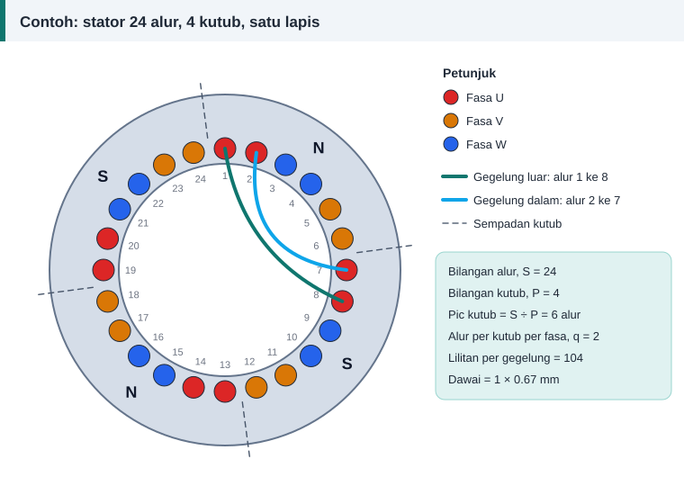

Pengiraan belitan
Contoh Pengiraan Penuh: Motor 1.1 kW, 4 Kutub, 24 Alur
Contoh ini menggunakan nilai lalai kalkulator lilitan semula, jadi anda boleh mengikutinya terus di skrin dan membandingkan setiap angka.
Data yang diberi
| Perkara | Nilai |
|---|---|
| Bekalan | 400 V, 50 Hz, sambungan bintang |
| Arus plat nama | 2.7 A |
| Bilangan alur, S | 24 |
| Bilangan kutub, P | 4 |
| Diameter dalam stator, D | 80 mm |
| Panjang teras, L | 75 mm |
| Kedalaman alur | 14 mm |
| Luas alur | 100 mm² |
| Jenis belitan | Satu lapis, satu laluan |


Langkah 1: laju, pic kutub dan q
Laju segerak = 120 × 50 ÷ 4 = 1500 psm. Pic kutub = 24 ÷ 4 = 6 alur. Alur per kutub per fasa, q = 24 ÷ (3 × 4) = 2.
Langkah 2: faktor belitan
Bagi q = 2, faktor agihan ialah 0.966. Belitan satu lapis mempunyai faktor pic berkesan 1, maka kw = 0.966.
Langkah 3: fluks setiap kutub
Pic kutub dalam milimeter = π × 80 ÷ 4 = 62.83 mm. Dengan ketumpatan fluks purata 0.55 T:
Φ = 0.55 × 0.06283 × 0.075 = 0.002592 Wb
Langkah 4: lilitan per fasa
Voltan fasa = 400 ÷ √3 = 230.94 V.
N = 230.94 ÷ (4.44 × 50 × 0.0025918 × 0.9659) = 415.5
Langkah 5: konduktor per alur
Setiap lilitan mempunyai dua konduktor, dan tiga fasa berkongsi 24 alur:
Konduktor per alur = 6 × N ÷ S = 6 × 415.5 ÷ 24 = 103.9
Bundarkan kepada 104. Dalam belitan satu lapis, itu juga bilangan lilitan setiap gegelung, dan terdapat 24 ÷ 2 = 12 gegelung. Lilitan per fasa sebenar menjadi 416 dan ketumpatan fluks sebenar 0.549 T.
Langkah 6: saiz dawai mengikut ketumpatan arus
Arus fasa ialah 2.7 A. Dengan J = 6 A/mm², luas yang diperlukan ialah 2.7 ÷ 6 = 0.45 mm², iaitu diameter 0.757 mm. Saiz piawai seterusnya ialah 0.80 mm.
Langkah 7: semak ruang alur
Pada sasaran isian 0.40, kuprum yang dibenarkan ialah 0.40 × 100 = 40 mm². Bagi 104 konduktor, setiap satu hanya boleh berluas 40 ÷ 104 = 0.385 mm², iaitu diameter 0.700 mm. Saiz piawai yang tidak melebihinya ialah 0.67 mm.
Dawai 0.80 mm tidak muat kerana isiannya 0.52. Dawai yang dipilih ialah 0.67 mm dengan luas 0.3526 mm². Ketumpatan arus sebenar menjadi 2.7 ÷ 0.3526 = 7.66 A/mm² dan faktor isian 0.37.
Inilah keadaan biasa bagi motor kecil: ruang alur, bukan ketumpatan arus pilihan, yang menentukan saiz dawai.
Langkah 8: panjang, berat dan rintangan
Lebar gegelung purata = 6 alur × π × (80 + 14) ÷ 24 = 73.8 mm. Panjang purata satu lilitan = 2 × 75 + 4 × 10 + π × 73.8 = 422 mm.
- Jumlah lilitan = 104 × 12 = 1248.
- Jumlah panjang = 1248 × 0.422 = 527 m.
- Berat = 527 × 0.3526 × 8.9 ÷ 1000 = 1.65 kg.
- Rintangan fasa pada 20 °C = 0.01724 × (416 × 0.422) ÷ 0.3526 = 8.58 Ω.
Ringkasan keputusan
| Keputusan | Nilai |
|---|---|
| Lilitan per gegelung | 104 |
| Bilangan gegelung | 12 |
| Rentang gegelung sepusat | 1–8 dan 2–7 |
| Dawai | 1 × 0.67 mm |
| Ketumpatan arus | 7.66 A/mm² |
| Faktor isian | 0.37 |
| Jumlah dawai | 527 m, 1.65 kg |
| Rintangan fasa pada 20 °C | 8.58 Ω |
Cara membaca keputusan ini
Angka di atas ialah anggaran reka bentuk, bukan data pengilang. Ketumpatan fluks 0.55 T ialah andaian. Jika anda mempunyai belitan asal, bandingkan: masukkan lilitan asal ke dalam kalkulator dan lihat ketumpatan fluks yang dikira.
Contohnya, jika motor ini asalnya mempunyai 98 lilitan setiap gegelung, ketumpatan fluksnya ialah 0.583 T. Nilai itu masih dalam julat lazim, jadi gunakan 98 lilitan seperti asal, bukan 104.
Rujukan dan bacaan lanjut
Artikel berkaitan
Formula Lilitan Per Fasa: E = 4.44 f Φ N kw Dijelaskan
Satu persamaan menghubungkan voltan, frekuensi, fluks dan bilangan lilitan. Fahami asal-usul angka 4.44 dan cara menggunakannya untuk mengira lilitan per fasa motor.
Faktor Isian Alur: Berapa Banyak Dawai Boleh Masuk
Pengiraan memberi bilangan lilitan dan saiz dawai, tetapi alur yang menentukan sama ada semuanya muat. Faktor isian ialah semakan terakhir sebelum mula melilit gegelung.
Mengira Panjang dan Berat Dawai Kuprum untuk Lilitan Semula
Dawai kuprum dijual mengikut berat, bukan panjang. Kira panjang purata satu lilitan, jumlah panjang dan berat yang perlu dibeli supaya tidak terkurang di tengah kerja.